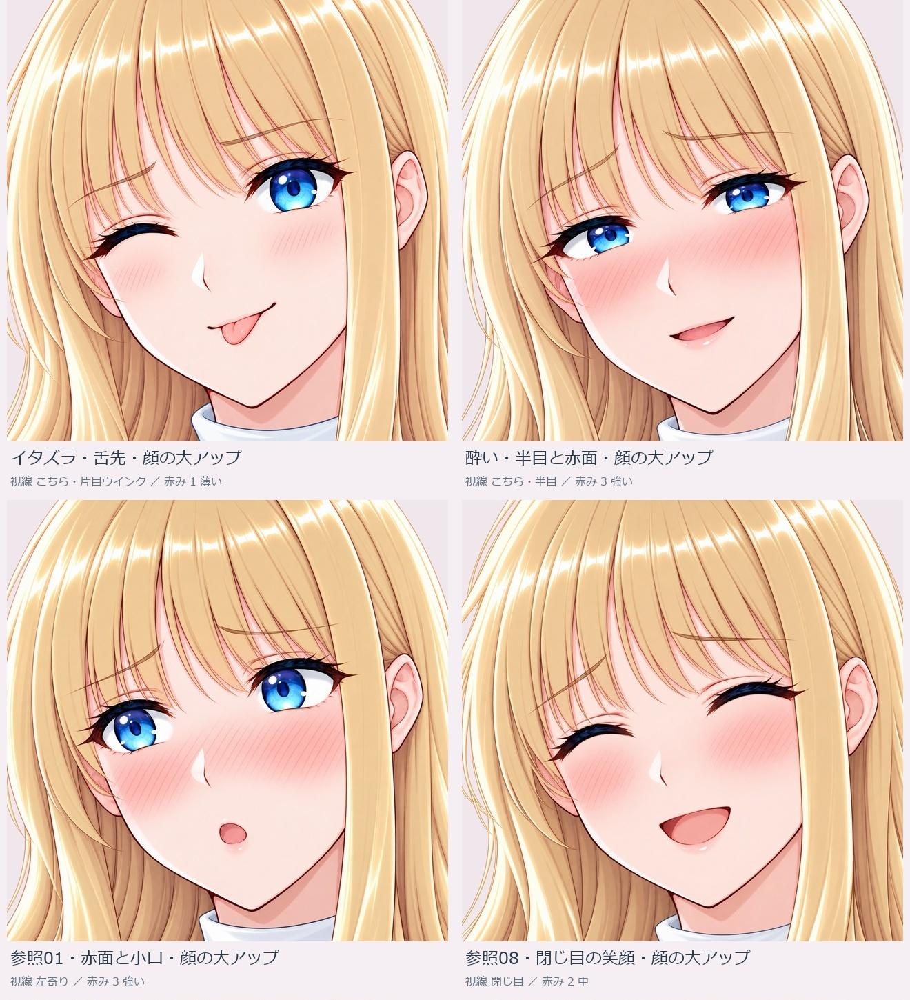

4表情×通常アップ／顔大アップの8画像と、前回の微笑みの顔大アップ1画像を追加しました。 顔大アップは1254×1254、通常アップは1037×1516または1517。いずれも独立したRGBA PNGです。

| 表情 | 参照元 | 取り入れた項目 |
|---|---|---|
| イタズラ・舌先 | 今回の指定 | ウインク、短い舌先、小さな笑み |
| 酔い | 参照用素材/ref-06.png | 半目、内側の上がる眉、頬・鼻の赤み。口は小さな笑みへ調整 |
| 赤面と小口 | 参照用素材/ref-01.png | 強い赤み、眉、開いた目、小さな丸い口 |
| 閉じ目の笑顔 | 参照用素材/ref-08.png | 閉じ目、赤み、開いた笑顔 |
参照は表情だけに使い、人物・髪・体・服装・姿勢・背景は既存ヒロインを基準にしています。原本の参照画像はこの共有版へ追加していません。顔大アップも内蔵画像編集で作った別出力で、単純な画素クロップではありません。表情や形状に微差があり、完全な画素固定は保証していません。
| 候補 | 画角 | 大きさ | PNG |
|---|---|---|---|
| イタズラ・舌先・顔の大アップ | 顔大アップ | 1254×1254 | 開く |
| 酔い・半目と赤面・顔の大アップ | 顔大アップ | 1254×1254 | 開く |
| 参照01・赤面と小口・顔の大アップ | 顔大アップ | 1254×1254 | 開く |
| 参照08・閉じ目の笑顔・顔の大アップ | 顔大アップ | 1254×1254 | 開く |
| イタズラ・舌先・通常アップ | 通常アップ | 1037×1517 | 開く |
| 酔い・半目と赤面・通常アップ | 通常アップ | 1037×1516 | 開く |
| 参照01・赤面と小口・通常アップ | 通常アップ | 1037×1517 | 開く |
| 参照08・閉じ目の笑顔・通常アップ | 通常アップ | 1037×1516 | 開く |
| 微笑み・顔の大アップ | 顔大アップ | 1254×1254 | 開く |
表情管理は既存34候補を保ち43画像候補へ追加。新しい感情が9種類という数え方ではなく、新表情4種類と画角違いを含む9画像です。「今回のみ」は追加9画像、「今回のアップ4候補を並べる」は代表4表情の顔大アップを並べます。採否はIDと画像SHA256で対応し、旧候補の採否を自動変更しません。HTMLの操作には共有ブランチ一式を取得してindex.htmlを開いてください。
内蔵生成・編集9試行9出力、今回のツール拒否0。採用未確定の候補。ゲーム実装・実ブラウザー操作は未検証です。